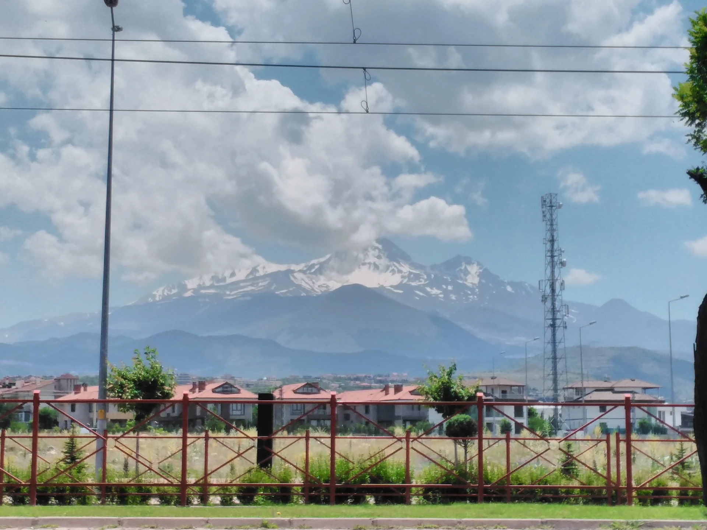
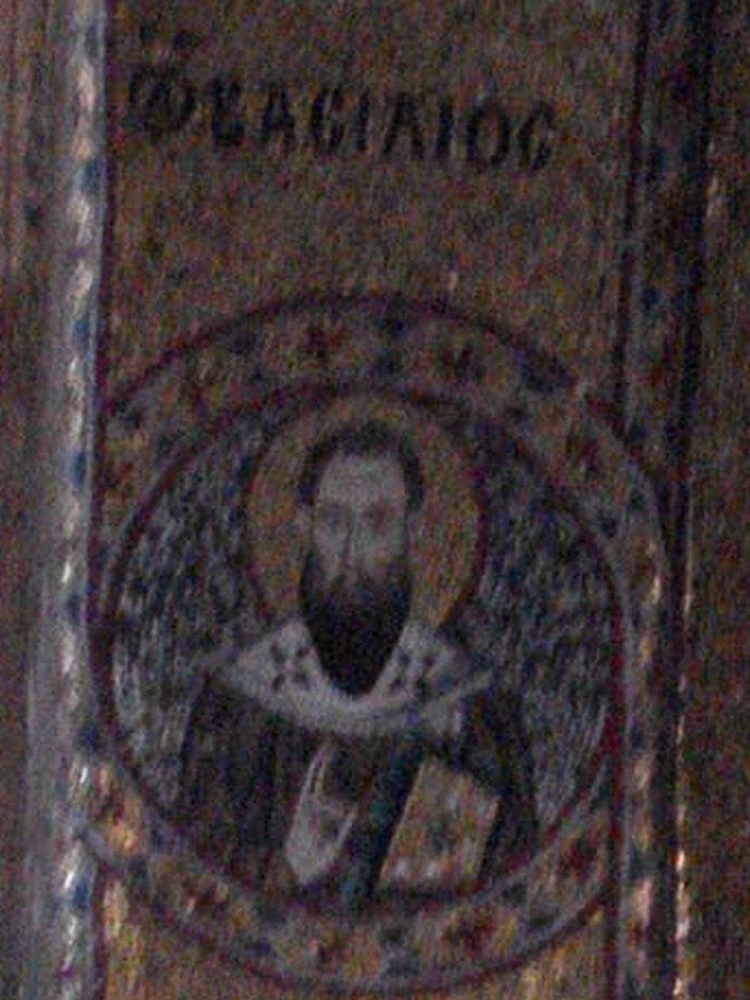
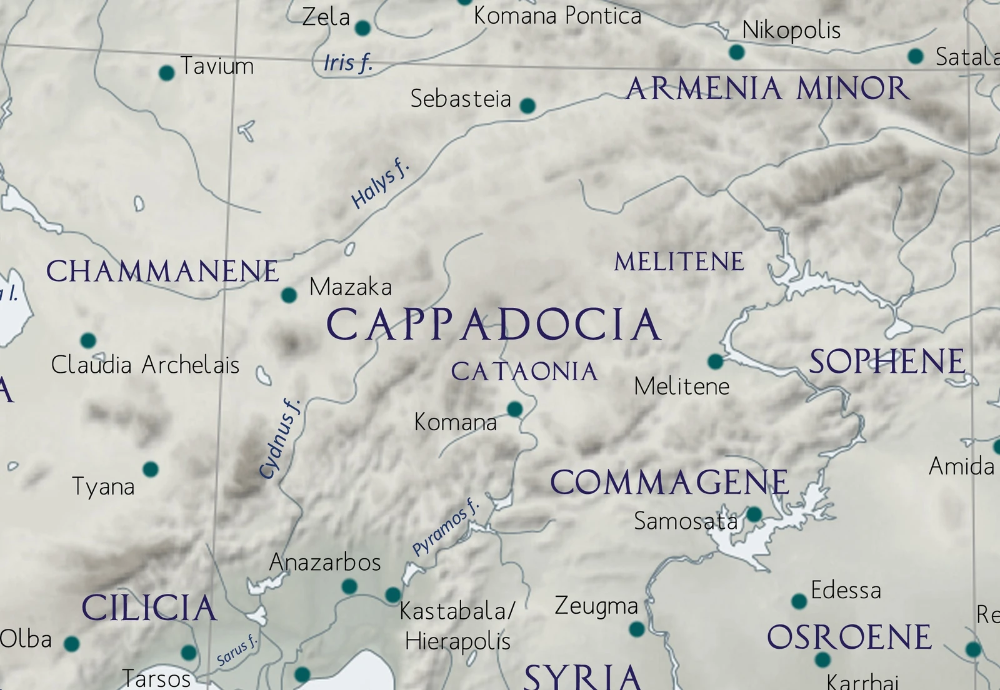

아직 펼치지 않은 카드
아직 펼치지 않은 카드
새해 첫날 그리스 식탁의 빵, 바실로피타. 이름 속의 바실리우스는 실제로 살았던 사람이에요. 지도 위에서 그가 오간 길을 따라, 큰 기근이 든 고향 카이사레아에 닿아 보세요.
새해 첫날 동전을 숨긴 빵을 잘라. 이 빵 이름의 주인공 바실리우스 아저씨가 다닌 길을 지도에서 따라가 볼까?
검수 전 시안이에요(기준서 1판). 바실리우스의 삶은 친구 그레고리오스의 추도사와 바실리우스의 편지, 브리태니커를 따랐어요. 동전과 빵 이야기는 전해지는 이야기라고 밝혔고, 지도 위 점의 자리는 어림이에요. 상상은 ‘눈 감고 상상해 보기’에만 썼어요.
그리스의 새해 첫날, 식탁 위에 둥근 빵 바실로피타가 놓여요. 집주인이 칼로 빵 위에 십자 모양을 긋고, 한 조각씩 자르며 누구 몫인지 이름을 불러요.
빵 속에는 동전 하나(그리스 말로 플루리)가 숨어 있고, 그 조각을 받은 사람은 한 해 내내 운이 좋다고 여겨요. 시골에서는 가축과 밭, 고깃배와 방앗간 몫의 조각도 잘라요.

1월 1일은 바실리우스가 세상을 떠난 날이에요. 동방 교회(그리스·러시아 같은 동방의 정교회들)는 이날, 서방 교회는 이튿날 그를 기억해요. 그래서 이 빵을 ‘바실리우스의 빵’이라고 불러요.
새해 첫날 동전을 숨긴 빵을 잘라. 시골에서는 소랑 밭이랑 고깃배 몫도 잘라 준대!
물어보기우리 집 빵을 자른다면, 사람 말고 누구 몫도 잘라 주고 싶어?
빵 이름 속의 바실리우스(329~379)는 실제로 살았던 사람이에요. 카파도키아 지방의 도시 카이사레아에서 태어나, 공부하러 멀리 떠났다가 고향으로 돌아왔어요.
지도 위에서 그의 길을 따라가 보세요. 마지막 곳은 큰 기근이 든 고향 카이사레아예요. 길 끝 아래에, 친구 그레고리오스가 그날을 적은 글이 있어요.
‘다음 곳으로’를 눌러 바실리우스의 길을 따라가 보세요. 지도의 글씨는 그리스·로마 시대의 옛 이름이고, 지도 위 점의 자리는 어림이에요.
 카이사레아콘스탄티노폴리스폰토스의 안네시카이사레아
카이사레아콘스탄티노폴리스폰토스의 안네시카이사레아그리스·로마 시대의 소아시아 지도(지금의 튀르키예 일대) · 지도: Caliniuc · CC BY-SA 4.0 · 위키미디어 공용
370년 바실리우스는 카이사레아의 주교(한 지역의 교회들을 이끄는 사람)가 되었고, 379년 1월 1일 세상을 떠났어요. 동방 교회는 이날 그를 기억해요.
“그는 기근에 시달리는 사람들을 한데 모아, 국을 담은 그릇과 우리 고장에 저장되어 있던 고기를 그들 앞에 놓았다.”
나지안조스의 그레고리오스, 「바실리우스 추도사」(그의 연설 43번) 35절 · 그리스어 원문의 영어 번역을 이 안내서가 우리말로 옮김
그레고리오스는 바실리우스가 말과 권고로 곡식을 가진 이들의 창고를 열게 했고, 그리스도가 마지막 저녁에 제자들의 발을 씻긴 것(요한복음 13장)을 본받아 하인들과 동료들의 도움을 받아 굶주린 이들을 돌봤다고 적었어요.
바실리우스는 진짜 있었던 사람이야. 지도에서 그가 다닌 길을 따라가 보자. 마지막엔 배고픈 사람들에게 국을 나눠 줘!
물어보기배고픈 사람들에게 국을 한 그릇씩 건넨다면, 무슨 말을 함께 하고 싶어?
전해지는 이야기가 있어요. 무거운 세금 때문에 카이사레아 사람들은 동전과 장신구를 내놓아야 했어요. 바실리우스의 설득으로 세금은 없던 일이 되었지만, 쌓인 동전과 장신구를 저마다의 주인에게 돌려주기는 어려웠어요.
바실리우스는 보물을 빵 속에 넣어 굽게 했고, 빵을 나누자 저마다 자기 물건을 되찾았다고 해요.

그리스 정교회의 한 교회는 이 이야기를 부모와 조부모, 대부모(세례 때 신앙의 길잡이가 되어 주는 어른)가 대대로 들려준 이야기라고 소개해요. 역사 기록이라기보다 대를 이어 전한 이야기예요.
빼앗길 뻔한 동전을 빵에 넣어 구웠대. 빵을 나누니 다들 자기 물건을 찾았대!
물어보기빵 속에서 내 물건이 나오면 뭐라고 말할 것 같아?
카이사레아는 지금 튀르키예의 카이세리예요. 옛 이름은 마자카였고, 1세기 초 카이사레아로 이름이 바뀌어 로마의 카파도키아 지방 수도가 되었어요.
도시는 불이 꺼진 화산 에르지예스산(옛 이름 아르가이오스, 3,917미터) 아래 평원에 있어요. 바실리우스는 도시 북동쪽 바로 바깥에 교회 시설을 세웠다고 전해져요.

그레고리오스는 도시에서 조금 나가면 보이는 그곳을 ‘새 도시’, ‘경건의 창고’라고 불렀어요. 병든 이들을 돌보던 곳이에요.
다시 새해 첫날의 식탁이에요. 칼이 빵 위에 십자를 긋고, 조각마다 이름을 불러요. 그 빵의 이름이 ‘바실리우스의 빵’이에요.
바실리우스는 굶주린 이들 앞에 먼저 그릇을 놓았어요. 우리 집 바실로피타라면, 식구들 몫을 자르기 전에 누구 몫을 먼저 떼어 둘까요?
바실리우스가 살던 도시 뒤에는 눈 덮인 큰 산이 있어. 지금은 카이세리라고 불러.
물어보기우리 집 빵을 나눈다면, 누구 몫을 먼저 떼어 둘까?
눈 감고 상상해 보기
흉년의 겨울, 카이사레아 성벽 아래. 멀리 눈 덮인 산이 희게 빛나요. 김이 오르는 큰 솥 앞에 사람들이 줄을 서고, 그릇과 그릇이 부딪는 소리가 나요. 따뜻한 국 한 그릇이 언 손에 건네져요.
눈을 감아 봐. 추운 겨울, 멀리 하얀 산이 보여. 큰 솥에서 김이 모락모락! 따뜻한 국 한 그릇이 손에 쏙 들어와.
기근의 카이사레아에서처럼, 누군가 내 앞에 따뜻한 국 한 그릇을 놓아 준 날이 있었나요?
누가 나에게 따뜻한 국을 차려 준 날, 기억나? 누구였어?
마음에 닿는 한 줄을 고르거나 직접 써 보세요. 한 줄을 남기면 이 자리의 도장이 찍혀요. 이 기기에만 저장돼요.
이야기를 보다 궁금해질 만한 것들이에요. 답을 읽거나 짧은 영화로 보세요.


아직 펼치지 않은 이야기예요. 누르면 이야기가 펼쳐지고 색이 돌아와요. 더 알고 싶으면 근거를 따라가 보세요.
다 펼치면, 다음에 오실 때 새 이야기가 찾아와요.
오늘의 뒷이야기는 여기까지예요. 다음에 오시면 새 이야기가 기다리고 있어요.
펼친 뒷이야기 · 누르면 다시 볼 수 있어요
자르는 차례 그리스 관광청은 그리스도, 성모 마리아, 성 바실리우스, 집, 그다음 식구들 나이 차례라고 소개해요. 그리스 정부의 농촌 누리집은 집의 몫을 맨 먼저 자른다고 적어요. 한 그리스 정교회 교회는 교회에서 자를 때 넷째 조각을 그 교회의 수호성인이나 가난한 이들의 몫으로 둔다고 해요.
이야기도 여러 가지 그 교회의 글은 황제가 무거운 세금을 매겼고, 보물을 큰 빵 하나에 넣어 구웠다고 전해요. 그리스 관광청은 세금을 거두러 온 지방 관리 이야기로, 작은 파이마다 물건을 하나씩 넣었다고 전해요.
기근은 몇 년? 카이사레아의 큰 기근을 368~369년으로 보는 연구도 있고, 369년으로 적는 글도 있어요.
확인한 날 · 2026년 11월 18일 · 바뀌기 쉬운 정보라 정기적으로 다시 확인해요
이탈리아 팔레르모의 마르토라나 성당(산타 마리아 델라미랄리오 성당)은 유네스코 세계유산 ‘아랍-노르만 양식의 팔레르모’에 들어 있어요. 이 세계유산은 노르만 시칠리아 왕국 시대(1130~1194년)의 건축물들로, 화려한 모자이크로 이름나요. 여는 때는 미리 확인해 주세요.
카이사레아에서 시작해 기근의 카이사레아까지 길을 끝까지 따라가면 카드에 금박이 입혀져요.
둘 가운데 하나만 해도 카드가 채색돼요.
‘처음 만나는 기독교 문화’의 깊은 카드예요. 카드 단계와 남긴 글은 이 기기에만 저장돼요.
영화처럼 보기 · 약 3분
화면을 누르거나 → 키를 누르면 넘어가요. 그냥 두어도 자막이 저절로 넘어가요.